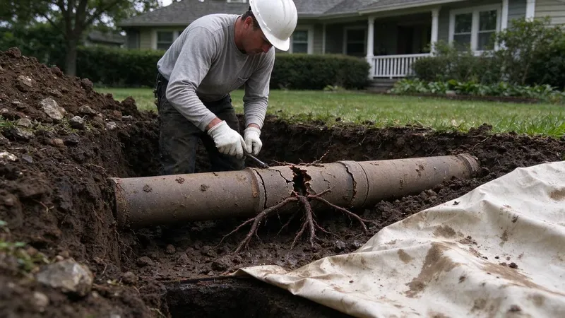

The pipes you never see do some of the hardest work in the house. A water service line brings fresh water in from the meter. A sewer lateral carries everything from the drains out to the city main or the septic tank. Both sit several feet underground, and either one can fail with very little warning. Fixing one rarely means trenching the yard anymore.
What Damages Buried Pipes in Arkansas
Tree roots cause more sewer trouble than anything else. Fast-growing shade trees like willows and silver maples send roots a long way looking for water, and a lot of ornamentals do the same. A hairline crack or loose joint leaks warm, nutrient-rich vapor, and roots find that vapor and work their way inside. Inside, they grow into a mat that snags waste and can eventually split the pipe.
Homes here are split between crawlspace and slab construction, and crawlspaces allow easier access for repairs and repiping.
Soil movement does damage slowly. Clay that swells after rain and shrinks in a drought keeps working against buried rock and hard layers that do not move at all. Over years that cycle shifts joints and cracks rigid pipe, and it leaves low spots called bellies where waste settles. Heavy trucks parked over a shallow line and poor bedding during construction make it worse.
Pipe material matters as well. In older neighborhoods it is common to find the original clay tile or cast iron sewer still in the ground. Some houses also have galvanized steel water service lines that rust from the inside out. Homes built from the 1970s on usually have ABS or PVC sewer pipe, which does not corrode but can still crack, pull apart at the joints or flatten under load.
Houses built from the late 1970s into the mid 1990s may contain polybutylene supply lines, which are prone to fail without warning.
Warning Signs of Underground Pipe Damage
Buried pipe problems show up in roundabout ways. Watch for these:
- Repeat backups in more than one fixture, starting with whatever drain sits lowest.
- A gurgling toilet when the washing machine drains.
- Sewer smell in the yard or around a cleanout.
- A green or soggy strip of lawn that stands out in a dry spell.
- Sinkholes or depressions along the path of the line.
- A water meter that keeps moving with every fixture off, pointing to a service line leak.
- Low water pressure through the whole house.
Modern Repair Methods
Diagnosis comes first. For a sewer line, we push a waterproof camera through the cleanout and record the full run. The footage shows roots, cracks, offsets and bellies, and a locator at the camera head marks the depth and location of each one from the surface. On a water service line, we pressure test it and listen with acoustic gear to find the leak.
Cured-in-place lining slides a resin-soaked felt liner into the old sewer, inflates it and lets it cure into a new jointless pipe inside the old one. The finished liner usually loses only a quarter inch or so of diameter. It seals cracks and root entry points and usually needs only the cleanout for access. Pipe bursting pulls new HDPE through the line while a cone-shaped head breaks the old pipe outward. Bursting suits pipe too broken to line. Spot repair means digging up one section to swap out one bad joint or a single sag. For water service, directional boring runs a new line from meter to house with a small pit at each end.
Cost comes down to footage and depth. A camera inspection typically runs $150 to $400. Spot sewer repairs often land between $1,500 and $4,500, trenchless lining or bursting of a full residential lateral commonly runs about $4,000 to $12,000, and replacing the water service usually comes in around $1,500 to $5,000. Trenchless is not always cheaper per foot than an excavator, but you are not paying to rebuild the driveway and the pavers afterward.
When to Call a Professional
Drains that keep backing up, or a meter showing a leak you cannot find, call for a professional inspection. Underground work often needs permits and utility locates, and careful digging around gas lines. DGR Plumbing uses sewer cameras, leak detection gear and trenchless methods to fix buried pipe with as little digging as possible, often just one pit at the cleanout. Call (501) 251-9708 to book an inspection. We walk you through the footage and give you each repair option with a price.
Need a licensed plumber in Arkansas?
DGR Plumbing answers 24/7 and offers same-day service across Arkansas.